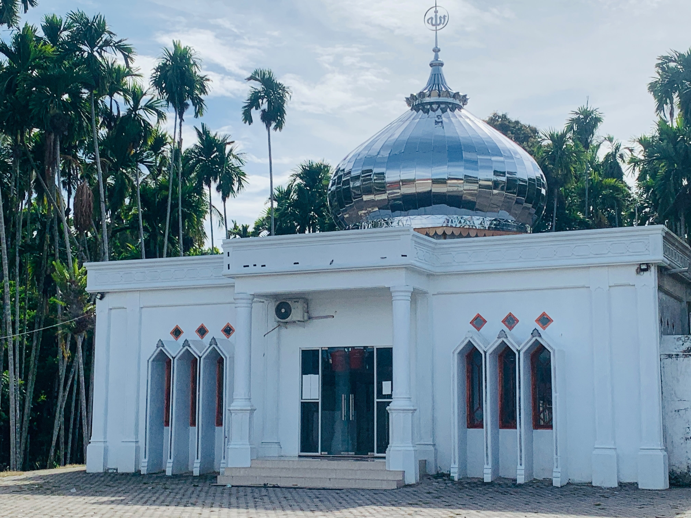

Gampong · Kec. Meureudu · Kab. Pidie Jaya · Aceh
Sebuah gampong yang bangkit dari duka gempa 2016, dirawat oleh meunasah, dan dijaga bersama oleh warganya.
Profil & Sejarah
Meunasah Kulam adalah sebuah gampong (desa) yang terletak di Kecamatan Meureudu, Kabupaten Pidie Jaya, Provinsi Aceh. Seperti banyak gampong lain di Pidie Jaya, kehidupan di sini berjalan pelan dan erat: anak-anak belajar mengaji sepulang sekolah, warga bertegur sapa di pos kamling, dan meunasah menjadi pusat dari hampir seluruh kegiatan bersama.
Gempa bumi yang mengguncang Pidie Jaya pada tahun 2016 turut meninggalkan bekas di gampong ini. Namun dari reruntuhan itu, warga bersama-sama membangun kembali meunasah sebagai tempat berteduh sekaligus tempat bersyukur — sebuah pengingat bahwa kampung ini dibangun berkali-kali oleh tangan yang sama.
Tujuh Sudut Kampung
Tempat-tempat yang menghidupi keseharian warga — dari ibadah, belajar, hingga sekadar duduk bercerita.
Dokumentasi & Kenangan
Lihat dokumentasi kegiatan mahasiswa yang pernah mengabdi di Meunasah Kulam.
Kontak & Lokasi
Punya cerita, foto, atau koreksi tentang gampong ini? Sampaikan pada kami supaya profil kampung ini semakin lengkap dan akurat.